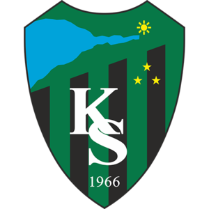
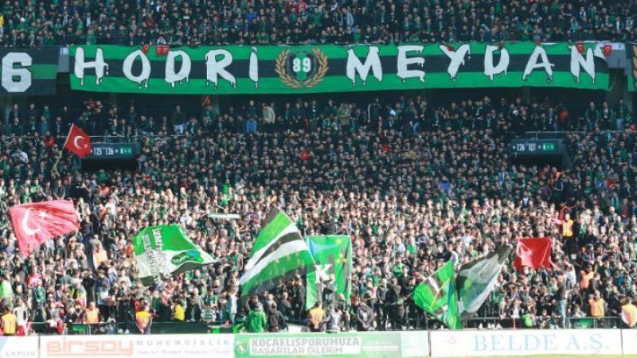

KOCAELİSPOR
Genel
Kocaelispor, 24 Nisan 1966 tarihinde Kocaeli'de kurulmuş olan Türk futbol kulübü. 2014-15 sezonunda 8 Aralık 2014 günü oynanan Büyükçekmecespor maçında Bölgesel Amatör Ligi seyirci rekorunu kırmıştır. Kocaelispor ayrıca 2015-16 sezonunda 26 Mart 2016 günü evinde oynadığı İstanbul Güngörenspor maçında 19.742 seyirciyle amatör ligde gece maçındaki en fazla seyirci rekorunu kırmıştır. 1 Mart 2020 tarihinde Kocaeli Stadyumunda oynanan maçta 28.250 taraftarın izlediği maç ile de 3. Lig seyirci rekorunu kırmıştır.
Avrupa Kupaları
Kocaelispor bugüne dek Avrupa Kupalarında Türkiye'yi en çok temsil eden takımların başında gelmektedir. Kocaelispor bugüne dek eski adıyla UEFA Kupası'nda 4, UEFA Kupa Galipleri Kupası'nda 4 ve UEFA Intertoto Kupası'nda 10 maç olmak üzere toplam 18 maç yapmıştır. Bu maçlarda 5 galibiyet ve 5 beraberlik alıp 8 kez mağlup olmuştur. Bu maçlarda 15 gol atarken 23 gol yemiştir.
Taraftarlar
1989 yılında kurulan Hodri Meydan adlı taraftar grubu, futbol maçlarını ağırlıklı olarak maraton tribünde izler. 1989 öncesi Çılgınlar adıyla var olan tribün, 1989'da Bartın deplasmanına gidilirken o zamanlar Uğur Dündar'ın yaptığı Hodri Meydan programından esinlenerek bu ad konulmuştur.
 